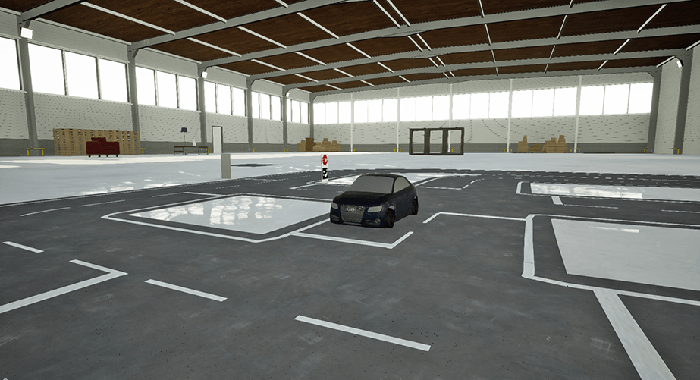

MNYs Deep Learning Self Driving Car

Some Context
This is our bachelor project at the Chair for Autonomous Intelligent Systems (AIS) at the University of Freiburg.
It was on a self-driving car based on the paper “End-to-End Driving via Conditional Imitation Learning” by Codevilla et al.
Here we implement the architecture given in the paper and attempted to create variations and improvements,
including a version which first attempts to first perform semantic segmentation on the camera image first.
Video Demo
Variations & Improvements
We made several different variations to the original paper.
The first was to use only one camera instead of the proposed three.
This was a necessity, due to hardware limitations of the tools provided.
We later managed to expand this to two cameras by rewriting some of the code written by the supervisors.
| Network | Description |
|---|---|
| standard | Uses only one forward facing camera to drive |
| segmented | Uses only the ground truth segmentation of a forward facing camera |
| seg and normal | Uses both the image and ground truth segmentation of a forward facing camera |
| last image too | Uses both the current and previous image from a forward facing camera |
| two cams | Uses a forward facing and a camera angled towards the right |
| self segmentation | Uses the forward facing camera and segments the image with a network first |
Results
Standard
Single camera and otherwise the implementation from the paper.
Works pretty well and is shown on the video.
This is on the testing dataset / unknown map and only with a small amount of data.
Segmented
Has the ground truth segmentation of a single camera output.
As expected the results of this artificial neural network are extremely
good and it handles even difficult problems with ease.
Obtaining such a perfect segmentation in reality is of course very hard if not impossible.
(eg. left lane one color right lane another) and the left lanes from both sides had the same one.
Seg And Normal
Had both the original image of a camera as well as its ground truth segmentation.
It did not perform better in most situations, as it carried with it some errors of the image only,
like thinking multiple parking spaces in a row are another lane.
It performed better than the segmentation only on streets with two lanes for each direction,
this was likely becuase it now saw the line separating the two directions.
In general it was perfoming on the same level as seg. only.
Last Image Too
This one was a bit tough and brought some problems,
as we doubled the input space it saved something similar to a state machine.
It tended to overcorrect, as it thought it was still very bad,
when it saw the last picture as the same as the new one before.
Though this was probably only because we trained it with the normal dataset.
In the end we were constrained by the end of the project.
Two Cams
A second image from the same position facing a bit to the left,
though in hindsight we should've done it to the right,
to get the outer side of the lanes in better view.
This overcorrected to the left, as it had the same problem as last img. too.
With a bigger dataset both would've probably just ignored the other image.
Self Segmentation
Here we implemented our own segmentation network to segment street,
lines indicating lanes and unimportant stuff.
Sadly on the computers provided this could barely run in real time and
lagged terribly, even though it worked quite well, if slow on our GPU.
For more info on the structure of the neural networks look into our slides
Environment
The whole simulation took place on a test map similar to the Audi Cup inside Unreal Engine.